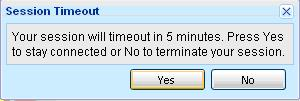

Login an logout the system¶
Before you can use the SimpleOFAC Suite™, you must login in to the system first. The functions you have depend on the roles you have in the system. So you may see different navigation menu in the left side when you login with different id.
Login the system¶
Open your favorite browser (IE, or Firefox or Chrome etc), type the following url in the address bar:
http://www.simpleofac.com/cp102/index.html
(replace the www.simpleofac.com with your own domain name, cp102 with your own context name)
You will see the login dialog, as follows:
Type username and password, and then click on Login button
Logout the system¶
Click the Log out link to log off the system. If user idles 10 minutes, the system will pop up a warning dialog, telling user that the session will timeout within 5 minutes.
Click Yes button to stay connected, click No to log off right away. The system will log off user after 5 minutes if not action is taken.
General Tips¶
- Select any menu item in the left side navigation menu will open a new Tab in the center panel, if the tab does not exist; otherwise, the existing Tab will be selected.
- Tables: select the header column of the table will sort the data on the column (if the column is sort-able). Right click the table header column will show a popup menu, allowing user to hide/show the columns.
- Select a row (by click on the row) in the table will update the details panel in the south side of the page.
- If the table is updatable, double click on the select row will open a new Tab, allowing user to update/delete the record in the center panel, if the tab does not exist; otherwise, the existing Tab will be selected.
- When user is in the Create New Tab or Update/Delete Tab, other Tabs are disable. User has to click on Cancel, Create or Save button to switch to other Tab.
- Any changes(add/modify/delete) will also be recorded in the respective history table and retrieve via respective history function.
- The search and search result can be in the same Tab or separate Tab. This is configurable.